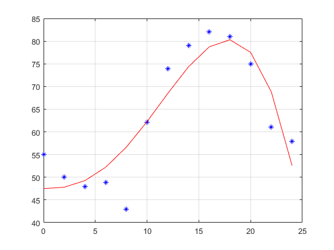

t=[0 2 4 6 8 10 12 14 16 18 20 22 24]
temp=[55 50 48 48.9 43 62.1 73.9 79 82 81 75 61 57.9]
hightemp = max(temp)
lowtemp = min(temp)
yr = (hightemp-lowtemp);
yz = temp-hightemp+(yr/2);
meantemp = mean(temp)
fit = @(a,t) (a(6)+t.^a(5)).*a(1).*(cosd(2*pi*t./a(2) + 2*pi/a(3))) + a(4);
fcn = @(a) norm(fit(a,t) - temp);
s = fminsearch(fcn, [yr; pi; -1; meantemp; 1; 1]);
xp = t;
figure(1)
plot(t,temp,'*b', xp,real(fit(s,xp)), 'r')
grid
t =
0 2 4 6 8 10 12 14 16 18 20 22 24
temp =
Columns 1 through 7
55.0000 50.0000 48.0000 48.9000 43.0000 62.1000 73.9000
Columns 8 through 13
79.0000 82.0000 81.0000 75.0000 61.0000 57.9000
hightemp =
82
lowtemp =
43
meantemp =
62.8308
Exiting: Maximum number of function evaluations has been exceeded
- increase MaxFunEvals option.
Current function value: 20.434909
